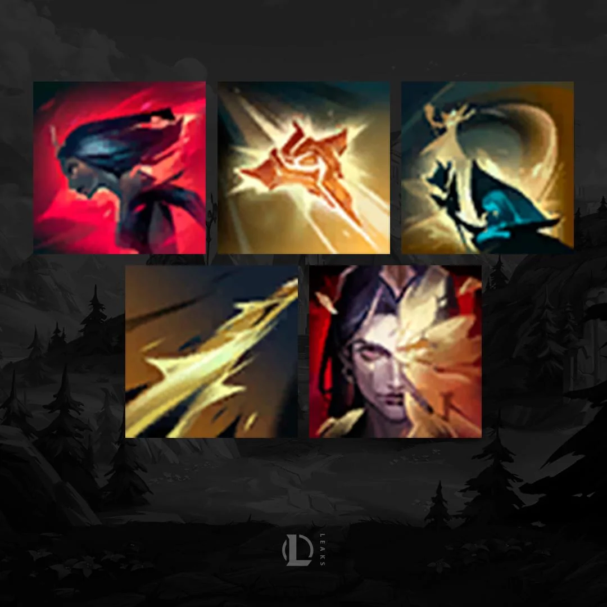

LeBlanc é uma das figuras mais misteriosas do universo de League of Legends. Ela manipula eventos e controla o destino de Noxus sem jamais ser vista diretamente.
No jogo, é conhecida por sua mobilidade e explosão de dano, sendo uma das assassinas mais perigosas e imprevisíveis.
Seu estilo de jogo gira em torno de enganação, ilusões e movimentos rápidos que confundem e surpreendem seus oponentes.
História
LeBlanc não é um nome, mas sim um disfarce utilizado há séculos por uma figura enigmática que comanda a Rosa Negra, organização secreta de Noxus.
Capaz de criar ilusões perfeitas, muitas vezes sua presença é apenas uma cópia — o que torna sua verdadeira identidade impossível de confirmar.
Durante anos, influenciou imperadores, generais e famílias importantes, alterando o rumo político do império.
Habilidades

Passiva – Espelho Mágico: LeBlanc cria um clone quando atinge pouca vida.
Q – Sigilo da Maldade: Marca o inimigo e causa dano ao detonar.
W – Distorção: Avança rapidamente, causa dano e pode retornar ao ponto inicial.
E – Correntes Etéreas: Prende o alvo caso não escape a tempo.
R – Mímica: Replica uma de suas habilidades anteriores com efeitos mais poderosos.
Rosa Negra e Leblanc
LeBlanc é a fundadora e também a verdadeira líder da cabala conhecida como Rosa Negra.
Embora outros membros importantes existam (como Vladimir, Cassiopeia e Elise), é LeBlanc quem realmente comanda a ordem nos bastidores.
Ela usa ilusões, clones mágicos e identidades falsas para aparecer em vários lugares ao mesmo tempo — por isso muitos acreditam que a Rosa Negra é formada por várias “LeBlancs”, quando na verdade tudo é manipulação dela.